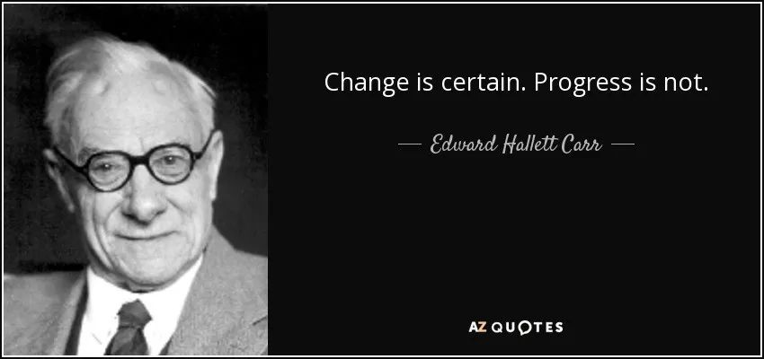

收录于合集 #理论研究 96个

作品简介
【作者】 John M. Owen：美国弗吉尼亚大学政治学教授
【编译】 王馨翊（国政学人编译员, 伦敦大学国王学院研究生）
【校对】 胡瑞琨
【审核】 朱晓洁
【排版】 谭誉豪
【 美编 】黄竹音
【来源】 Owen, J. M. (2019). Ikenberry, international relations theory, and the rise of China. The British Journal of Politics and International Relations , 21(1), 55–62. https://doi.org/10.1177/1369148118791979
期刊简介
英国政治与国际关系杂志（BJPIR）是一份国际期刊，发表国际关系、比较政治、公共政策、政治理论和英国政治与政策方面创新的当代学术成果。它是世界上最重要的英国政治研究杂志。该期刊为出版伦理委员会（COPE）成员。2019年其影响因子为2.539。
伊肯伯里、国际关系理论与中国的崛起
Ikenberry, international relations theory, and the rise of China
John M. Owen
摘 要
本文提出了两个观点。第一点是关于国际关系理论中各种“主义”的讨论。爱德华·卡尔等现实主义者对自由主义理论提出了诸多挑战。约翰·伊肯伯里在其2001年的著作《大战胜利之后》中针对这些挑战给予了最好的回应。第二点是关于中国崛起这一前沿且重要的问题。作者认为伊肯伯里关于中国对自由国际秩序（LIO）影响的判断可能过于乐观，并认为伊肯伯里的自由霸权（liberal hegemony）理论本身就是支持这一观点的理由之一。
权力？规则？
在世界政治中，强权（coercion）和制度（institutions）都极为重要，我们应如何看待权力和规则？伊肯伯里对这个经典问题做出了回应。
卡尔之问 ****
自由主义与现实主义之辩始终围绕着这一问题。自由主义者认为法律、相互依存关系或是民主体制可以对国际和平进行理性规划。现实主义者则认为国际政治是关于权力的，而手握权力者将竭尽一切维持权力。
在两次世界大战期间，卡尔（Carr）根据马克思的理论提出了他的观点， 认为世界政治中自由主义的意识形态实际上是自私的。 国际联盟（League of Nations）、自由贸易、国际法：这些机制的作用是巩固英国、法国和美国等大国的地位，并压制德国、意大利、日本、和苏联等新兴力量的崛起。
卡尔认为，“思想遵循目的”（thought follows purpose）：行为者建构思想以服务自身利益。自由主义国家尤其擅长构建具有普遍吸引力的思想，特别是所谓的“利益一致”论（harmony of interests）。在他们撰写的故事中，自由主义国家是贤德的；而非自由国家则是邪恶的。但卡尔认为自由民主政体与法西斯主义或共产主义政体并无不同。

来源：https://www.azquotes.com/quote/1185168
之后的现实主义学者，尤其是罗伯特·吉尔平（Robert Gilpin），对卡尔关于霸权的观点进行了更深入的讨论。国家间不均衡的发展必然导致霸权转移的发生。这个时期是危险的，因为崛起和衰落的两个霸权间很可能会产生战争。如同之前的英国一样，美国势必也会衰落，其缔造的国际秩序也会瓦解。 和卡尔一样，吉尔平认为所有霸权都是一样的，美国领导的西方秩序与其他国际秩序没有区别，其本质仍然是强权。
罗伯特·基欧汉在其1984年的著作《霸权之后》中里程碑式地否认了现实主义者的断言。相比之前的自由主义者，基欧汉利用制度经济学更深入地探索权力、利益、制度和合作之间的联系。他最著名的论点是，即使制度的创造者和执行者消失了，其他国家也有动力维持制度的运转。 但是基欧汉更重要的理论主张是，制度可以加强自愿合作，同时制度只有在为强国的利益服务时才能生存。
然而，现实主义者们并不认同，其中以约翰·米尔斯海默（John Mearsheimer）的批评最为著名。他认为制度是权力分配机能的一部分，因此它对关于国际政治的解释没有任何重要价值。基欧汉和丽萨·马丁（Lisa Martin）也承认，在实践中很难区分对合作产生影响的到底是制度本身，还是霸权通过制度进行的胁迫。
伊肯伯里之答 ****
在《大战胜利之后》中，伊肯伯里从另一个角度探讨了卡尔的问题。他的关注点在于，为什么历史上某些霸权比其他霸权更成功。正如吉尔平所说，所有霸权秩序的共同点在于它们都出现在大战之后。但是某些秩序比其他秩序持续时间更长。例如，第二次世界大战之后，美国建立的自由主义秩序取得了巨大的成功。
伊肯伯里认为成功的原因在于霸权国和其他国家达成了各方都可以接受的协议，并且都逐渐获得更多回报。美国在贸易、金融、法律和安全等领域受制于各种国际制度。它利用自我约束、透明性和社会开放性影响盟友。因此，中小国家承诺与美国加入同一机构进行合作，从而放弃霸权竞争，避免对美国霸权产生挑战。作为回报，它们获得了一个可预知的、合理的、良善的霸权。 霸权放弃了行动自由、不透明和短期利益，却使其地位更加持久。
来源：https://commons.wikimedia.org/wiki/File:G.John_Ikenberry_at_the_Miller Center_Colloquium.jpg
这是乌托邦吗？不，因为它根本没有否认强权的决定性作用。这是现实主义吗？不，因为它断言规则和制度会影响国际结果，乃至影响权力分配的持久性。 这个秩序是等级制的，美国享有特权，但它并没有像修昔底德所说的那样为所欲为。伊肯伯里的霸权是自由的，因为它充满了规则，开放和协调的理念，但同时它又是由一个想要保持其优势地位的大国所建立和维护的。其他的国家是伙伴，但不是平等的伙伴。在他们看来，美国霸权并不是最完美的，但是可以接受的，而且随着时间的流逝，他们对美国霸权的支持使他们获得了越来越多的回报。
中国特色国际主义? ****
事实证明，美国领导的自由主义秩序相对持久。在这一秩序下，跨国的商品、资本和劳动力流动增加了；欧盟、世贸组织、北约和其他机构的成员国数量也增加了。第二次世界大战结束70多年后，美国仍然是世界上的最强力量，而欧洲和日本并未试图制衡它。
现实主义者可能会说，中国在过去的40年里融入了美国领导的自由主义秩序，成为了世界第二大经济体，并对自由主义秩序造成了威胁。然而我们必须承认，美国霸权的消逝既是由于财富和权力的转移，也是因为越来越多的美国人，包括现任总统，对自由主义秩序失去了兴趣。在伊肯伯里的分析中，战后国际协议的确使美国霸权更为持久，但并不能确保它永久存在。
美国霸权的衰落与中国的崛起对自由主义秩序意味着什么？现实主义者倾向于将中国视为对美国全球地位的潜在挑战者，他们认为霸权转移必然会导致冲突，因此中国的崛起必将给自由主义秩序带来厄运。 伊肯伯里则更乐观，他认为中国既不能也不愿意重启老式的大国平衡 ——之所以不能，是因为被其他国家所制约；之所以不愿意，是因为这样做的成本太高。
伊肯伯里将美国与自由主义秩序区分开来，认为自由主义秩序已演变为一种“更广泛，更深入”的秩序，其规则网络超越了美国自身的控制。 今天，美国已成为自由主义秩序的一部分，也必须接受自由主义秩序的规则。虽然美国已选择退出自由主义秩序的很多机构，但这些机构仍然在正常运行。
中国想要的又是怎样的国际秩序呢？作者认为中国领导的国际秩序不会像当前的自由主义秩序一样。这其中有两点原因：首先，中国虽然支持国际贸易，但是并不像美国一样支持人道主义干涉，也不热衷推进民主化。另外，美国的国内政治相对中国更为透明，这可能会让中小国家对中国领导的世界秩序产生顾虑。
当然，由于成本过高，中国可能并不会考虑重建国际秩序。中国、美国、欧洲各国和其他国家最终可能会一同塑造一个新的秩序，在保留全球性机构的同时以区域性机构加以补充。同时，中国也许能够以实际行动来证明其不称霸、追求和平发展和共赢的意图。
译者评述
伊肯伯里的自由霸权理论是近年来非常流行的国际关系理论。这一理论综合了现实主义与自由主义的观点，有力地解释了当前的中美关系。本文是一篇有价值的理论综述，系统地梳理了现实主义与自由主义之间的主要争论，同时引入了自由霸权理论的回应，并总结了各理论流派对于中国崛起的认识与思考。
作者在文章中赞同了伊肯伯里的观点，认为当今美国所领导的自由主义秩序是最好的，即使这一秩序存在一些缺陷。然而伊肯伯里本人也承认自由主义秩序不仅导致了金融危机的爆发与经济不平等的加剧，更是在世界范围内以“自由”为名引发了一系列无休止的军事干预与灾难性的战争【1】。
伊肯伯里认为当前秩序的优点在于自由主义所代表的“规则、开放、协调”。但是，正如阎学通所论述的那样，这些价值观并非是西方自由主义所独有的，中国传统文化中的“仁、义、礼”奠定了中国王道外交的基石。而 “仁、义、礼”与自由主义价值观的关系是“包含和超越，而非对立”【2】。
最后，在新冠疫情肆虐的当下，美国选择退出世界卫生组织，在最急迫需要全人类共同对抗灾难之时，进一步地摧毁在二战后一手缔造的世界秩序，直接打破了对“规则、开放、协调”等国际主义观念的承诺。正如伊肯伯里所说，就目前而言，仍然拥有霸权的美国才是对自由主义秩序破坏最大的国家【3】。
参考文献
[1] Ikenberry, G. J. “The Next Liberal Order: The Age of Contagion Demands More Internationalism, Not Less”. Foreign Affairs , July/August 2020.
[2] 阎学通. 道义现实主义的国际关系理论. 国际问题研究 , 2014 (05): 102-130.
[3] Ikenberry, G. J. “The Plot Against American Foreign Policy: Can the Liberal Order Survive?”. Foreign Affairs , May/June 2017
文章观点不代表本平台观点，本平台评译分享的文章均出于专业学习之用, 不以任何盈利为目的，内容主要呈现对原文的介绍，原文内容请通过各高校购买的数据库自行下载
**
**
**
**
**
**
添加 “国小政”微信
获取最新资讯


国政学人
支持学术公益与知识传播
微信扫一扫赞赏作者 __赞赏
已喜欢，对作者说句悄悄话
取消 __
发送给作者
发送
最多40字，当前共字
上一页 1/3 下一页
长按二维码向我转账
支持学术公益与知识传播
受苹果公司新规定影响，微信 iOS 版的赞赏功能被关闭，可通过二维码转账支持公众号。